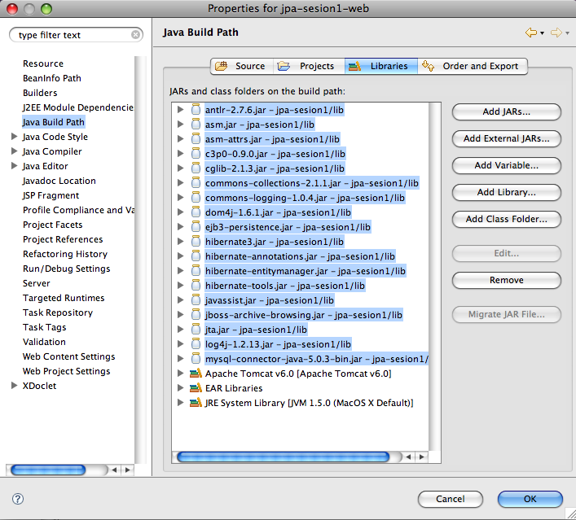
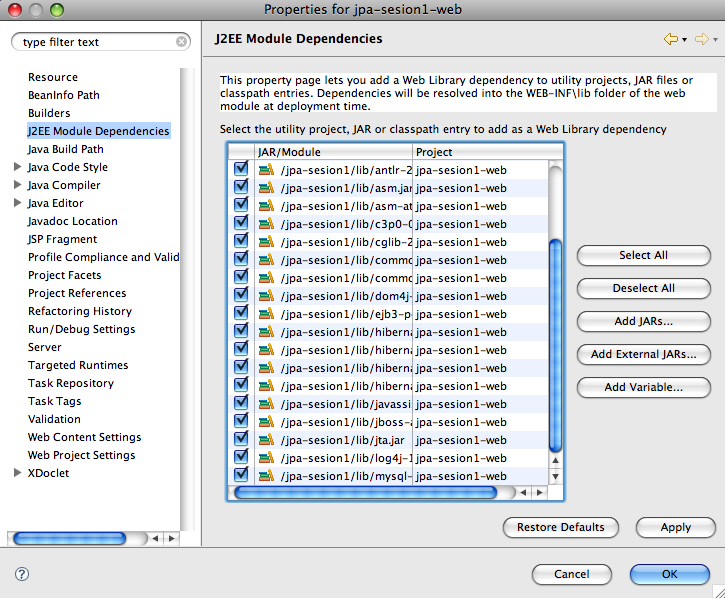
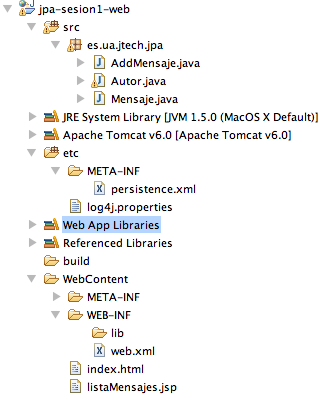

Ejercicios sesión 1: Introducción a JPA
Puesta en marcha de la aplicación de escritorio HolaMundo
1. Crea el proyecto jpa-sesion1 con la aplicación HolaMundo vista en la sesión de teoría. Necesitarás las librerías con la implementación de JPA de Hibernate. Las puedes encontrar en la sección de software de la web del curso.
2. Prueba a ejecutar varias veces la aplicación, introduciendo varios autores y mensajes. Comprueba con el administrador de MySQL las tablas y los datos creados.
3. Comprueba en la salida estándar las sentencias SQL ejecutadas por Hibernate.
4. Prueba a ejecutar la aplicación sin cerrar el EntityManager, sin hacer commit de la transacción o sin cerrar el EntityManagerFactory. ¿En qué casos no se graban los datos en la base de datos?
5. Por último, modifica el código de la aplicación HolaMundo para que un autor se borre y comprueba que funciona correctamente la anotación cascade: los mensajes asociados también se deberán borrar. Para borrar una entidad se debe llamar al método remove() del entity manager:
em.remove(autor);
Puesta en marcha del servlet AddMensaje
1. Vamos a crear el proyecto web jpa-sesion1-web con la aplicación web vista en la sesión de teoría. Necesitarás las librerías JSTL standard.jar y jstl.jar. Las puedes encontrar en la sección de software. Guarda estos JARs en el directorio WEB-INF/ib. Ahora vamos a enlazar (no copiar) en este nuevo proyecto todas las librerías de JPA del proyecto anterior. Al enlazar las librerías ahorramos mucho espacio (en este y todos los proyectos que vamos a definir en el módulo). El enlace de librerías en aplicaciones web no está bien resuelto en la versión actual del WTP de Eclipse, pero si sigues las indicaciones que hay a continuación todo funcionará correctmente.
2. En primer lugar, incluye en el build path del proyecto web jpa-sesion1-web todos los JAR del proyecto anterior jpa-sesion1. Debes pinchar en la opción Add JARs..., desplegar el directorio jpa-sesion1/lib y seleccionar todos los JARs. Podemos ver el resultado en la siguiente figura:

De esta forma hemos incluido las librerías en el proyecto web y no tendremos errores de compilación. Pero todavía falta una cosa, con esto no es suficiente. Hay que indicar que esas librerías deben desplegarse en el servidor Tomcat cuando se despliegue la aplicación.
3. Para eso tenemos que pulsar en el botón derecho sobre el proyecto y escoger la opción Properties y seleccionar la opción J2EE Module Dependencies. En el panel que aparece se deben seleccionar todas las librerías para que se desplieguen en el servidor:

4. Una vez configuradas las librerías, ya sólo debes copiar las clases Java, los ficheros JSP y HTML y el fichero etc/META-INF/persistence.xml (recuerda definir este directorio como un directorio de fuentes). A continuación puedes ver una imagen con el aspecto del proyecto en la perspectiva Java:

5. Despliega el proyecto en el servidor web y carga la página http://localhost:8080/jpa-sesion1-web/. Prueba a dar de alta un autor y un mensaje. La página JSP debe mostrar un listado de los mensajes del autor introducido, incluyendo el nuevo mensaje. Al igual en el proyecto anterior, podrás ver (esta vez en la salida de la consola) las sentencias SQL que lanza Hibernate a la base de datos. Repite las pruebas varias veces para comprobar que todo funciona correctamente.
Tratando con problemas
1. En el proyecto web prueba a cerrar el entity manager justo después de obtener la colección de mensajes y antes de hacer el forward(). El servlet dará un error. ¿Qué tipo de error da? ¿Por qué piensas que ha dado ese error?
2. Cambia el contenido de la página JSP y escribe una página que muestre únicamente: "XXXX ha escrito un mensaje" (cambiando XXXX por el nombre del autor que ha escrito el mensaje, claro). Deja el commit y el cierre del entity manager en la misma posición que en el punto anterior. ¿Se produce ahora algún error? ¿Se escribe correctamente el nombre del autor? ¿Qué crees que está pasando?. Vuelve a dejar la página como al principio, para que liste los mensajes de un autor.